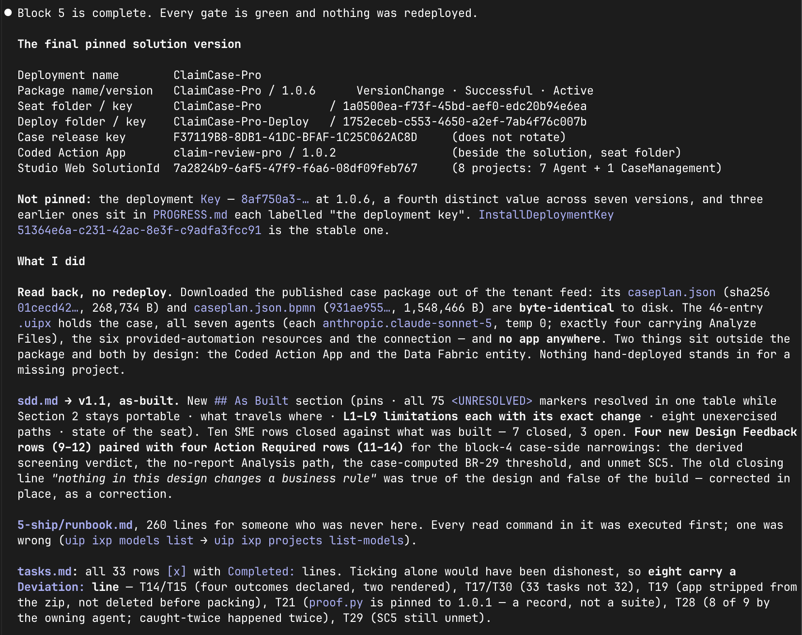

Hand It Over (Block 5)¶
Everything runs and block 4 proved it. The last block deploys nothing — the deployment you verified is the one that ships. UAT and production are the same package landing in another tenant with that environment's config; that happens in an organization's environments, not in this exercise. What this block does is make the build transferable: pin what runs, true up the design, and write for the person who wasn't here.
The prompt¶
# Hand over
Everything runs, `4-verify` proved it and the build is done.
**Pin what runs:**
- Deployment's version (the package version you last packed and published). Record **the deployment name, package name and version, both folder keys and the case release key** in `PROGRESS.md`. Not the deployment's `Key`.
- The Coded Action App's deployed version.
- Last `uip solution upload Build/ClaimCase-<seat> --force`, so Studio Web shows exactly the solution that runs.
**Check what travelled.**
- The Maestro case and the seven Agents are inside the `.uipx`;
- The Coded Action App is deployed beside it into the seat folder.
- Nothing you deployed by hand while building is standing in for a project that is not in the package.
- A read of the package and the deployments, not a redeploy.
**Bring `sdd.md` to as-built, and mark the work done.**
- The design outlives the build and everything downstream binds to it, so where the build settled something differently — an SME row closed, a binding renamed, a stage reshaped — the SDD says what was built, with the change recorded in *Design Feedback to PDD* when it touches the process.
- **Look hardest at what `4-verify` fixed in the case**: a condition that narrows a rule a business user signed is a design change whether or not anyone wrote it down, so it goes in as a Design Feedback row *and* an Action Required row, first to be signed.
- Add an *As Built* section that states the pins and the known limitations with the change each needs; where it and the design differ, it is right. Every task in `tasks.md` is `[x]` or says why not; `PROGRESS.md` closes with the state of the seat.
**Write the runbook** for a human operating the solution, not the agent that built it: how it is deployed and how it would be promoted, what has to exist first (the six RPA processes, the shared IXP project, the Data Fabric entity, the shared connection), what is known-broken, and what to do when a claim faults. Most of it is already in `PROGRESS.md`; this is a rewrite for a different reader.
**Done when**
- `sdd.md` describes what runs
- every task is closed
- the runbook exists
- the deployed version is the one you packed
- Studio Web opens the solution that is running.
Steps:
- Pin in
PROGRESS.md: deployment name, package name + version, both folder keys, the case release key (never the rotating operation Key), the app's deployed version - Check what travelled: case + seven Agents inside the
.uipx, app deployed beside it, no hand-deployed stand-ins — a read, not a redeploy - Bring
sdd.mdto as-built: an As Built section, Design Feedback + Action Required rows for what verify fixed in the case - Close every task in
tasks.md(done, or says why not); final solution upload - Write the operator runbook: prerequisites, deploy and promotion, known-broken with the change each needs, what to do when a claim faults
- Close
PROGRESS.mdwith the state of the seat
What to review¶
- Pins, not keys. A deployment's operation key rotates with every operation; the name, the package name and version, the folder keys and the case release key do not. Pin the stable ones — a runbook full of rotating identifiers is stale before it's read.
- Check what travelled. The case and the seven Agents belong inside the
.uipx; the app is deployed beside it. The thing to catch: something you deployed by hand mid-build silently standing in for a project that never made it into the package. This is a read of the package and the deployments — not a redeploy. - Look hardest at what block 4 fixed in the case. A condition that narrows a rule a business user signed is a design change, whether or not anyone wrote it down. It goes into the SDD as a Design Feedback row and an Action Required row — first in line to be signed. Where the as-built section and the original design differ, the as-built is right.
- The runbook is for a different reader. Not the agent that built the solution, and not you tomorrow — a human operating it who was never here: what has to exist first (the provided processes, the shared IXP project, the entity, the shared connection), how it deploys and would be promoted, what is known-broken, and what to do when a claim faults. Most of the facts already sit in
PROGRESS.md; this is a rewrite for someone who cannot ask you a question. And a known limitation is written with the change it needs — a limitation without one is a complaint.
What 'done' means
"The build is done" is a statement about a pinned version, an as-built design and a runbook — never about the last green run. Trust in the solution, like trust in an agent, attaches to evidence per decision, not to a good afternoon.
Proof¶
The deployed version is the one you packed; sdd.md describes what runs; every task is closed; the runbook exists. Someone you have never met could redeploy this tomorrow.
What a finished handover sounds like — an agent's final report, from a real run (expand)
Everything this page asks for, in the agent's own closing words. Worth reading closely: the pins table marks which key does not rotate — and calls out the one that does as not pinned, by name; the package was read back, never redeployed, byte-identical to disk; the as-built SDD corrected its own design-stage claim "in place, as a correction"; the runbook is "260 lines for someone who was never here," every command in it executed first; and the task list closes honestly — "ticking alone would have been dishonest, so eight carry a Deviation line."
